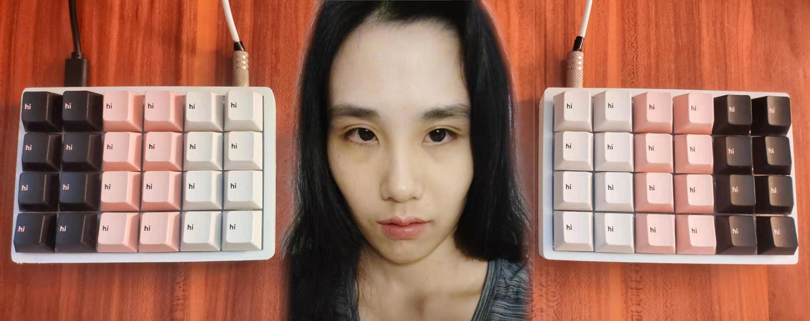
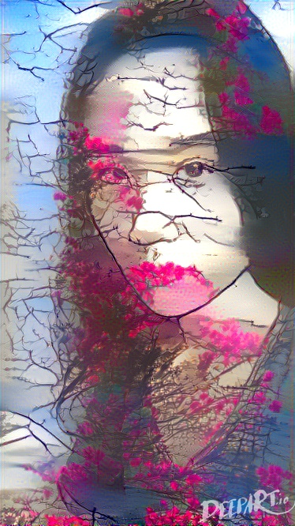

Homework 2 - Yunjie Shi

I use GIMP to combined a portrait photo of mine and a photo of a homemade keyboard built by myself with all keycaps has a "hi" on it, and it means I'm saying hi to the person who are viewing this image.
By using some filters of GIMP I made my portrait photo painting-like.

I use the Deepart to apply a landscape photo as style to my portrait, which makes it looks more artistic.